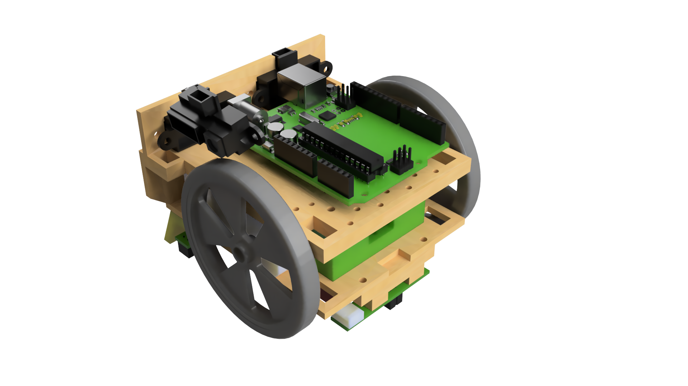
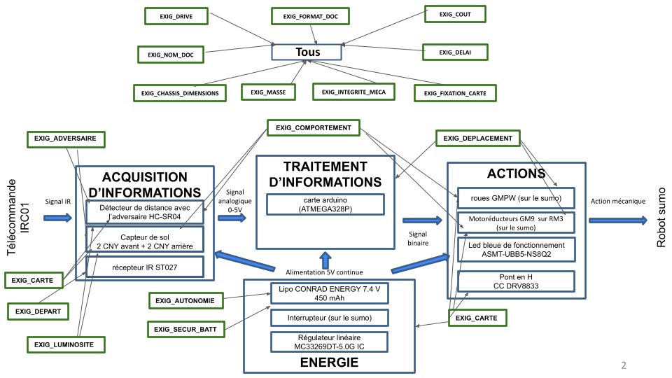
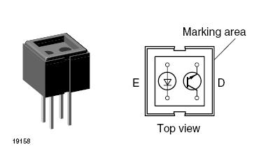
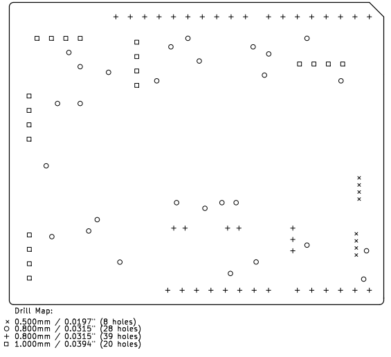

Robot Mini-Sumo Autonome
Conception d'un système mécatronique complet répondant à des contraintes de détection infrarouge, de gestion d'énergie et de propulsion bidirectionnelle, piloté par un microcontrôleur ATmega328P.

Synthèse du projet
Le projet est structuré autour du cycle en V. Le robot doit être capable de détecter un adversaire, d'identifier les limites du ring (ligne blanche) et d'exécuter des stratégies d'attaque/défense de manière totalement autonome après un signal de départ IR.
Fonctions principales
- Détection Adversaire : Acquisition via capteurs de distance avec filtrage des perturbations.
- Reconnaissance de Ligne : Distinction noir/blanc pour le maintien sur le Dohyo.
- Séquençage de Départ : Réception de trames infrarouges.
- Traitement : Algorithme d'évitement et de charge sur ATmega328P.

Solution technique pour répondre à une fonction
Chaque choix a été validé par simulation ou calcul :
- Détection de ligne : Pour répondre à l'exigence luminosité de notre cahier de charges, nous avons choisi le capteur utilisé 4 capteurs CNY70. Chacun de ces modules est équipé d'une diode infrarouge émettrice et d'un recepteur phototransistor. Par simulation, nous avons déterminé que ce capteur était adapté à notre application vu qu'il genere des resultats entre 0 et 1023 mais qu'on peut les transformer entre vrai et faux en choisissant un seuil approprié.

Dossier de Fabrication (DDF)
La phase de réalisation inclut le routage complet de la carte électronique. Les livrables comprennent :
- Schématique propre avec labels fonctionnels.
- Typon à l'échelle 1:1 pour gravure.
- Plan d'implantation des composants et perçage.
- Nomenclature complète (BOM) pour l'approvisionnement.
Image du schéma d'implantation des composants

Dérisquage
Pour garantir la réussite, des simulations ont été effectuées pour montrer le bon fonctionnement de chaque composant et de l'architecture globale :